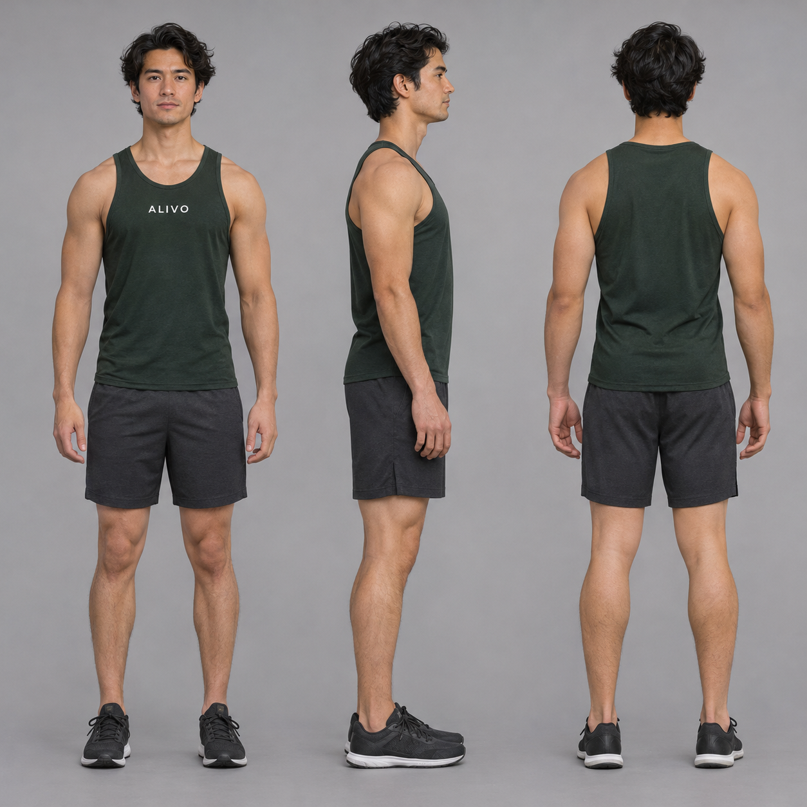
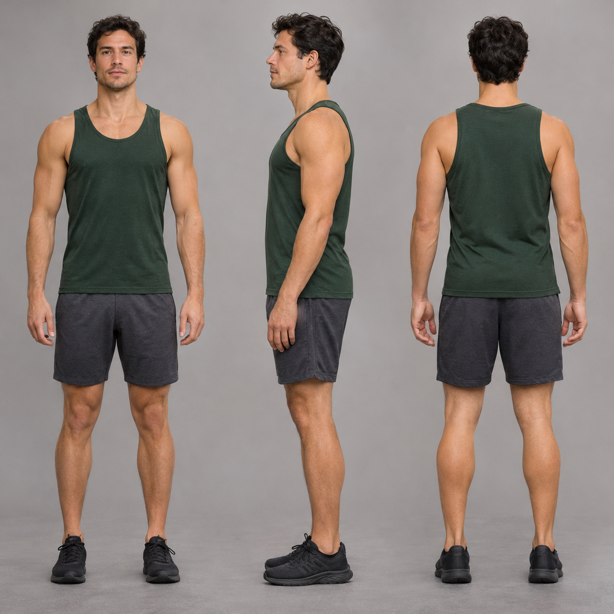
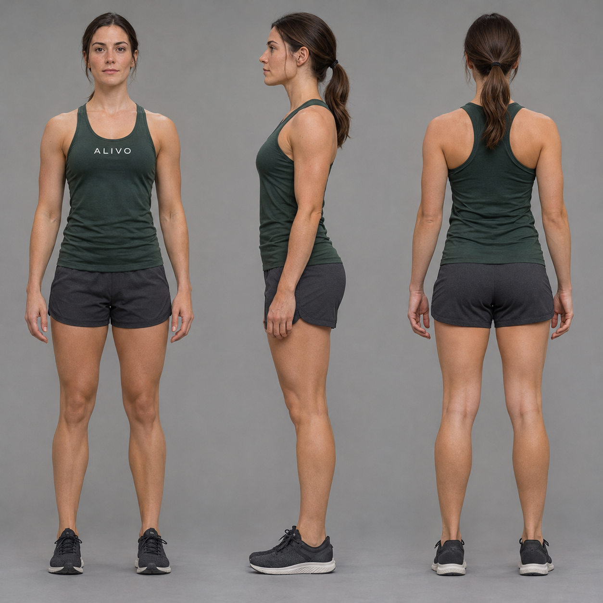
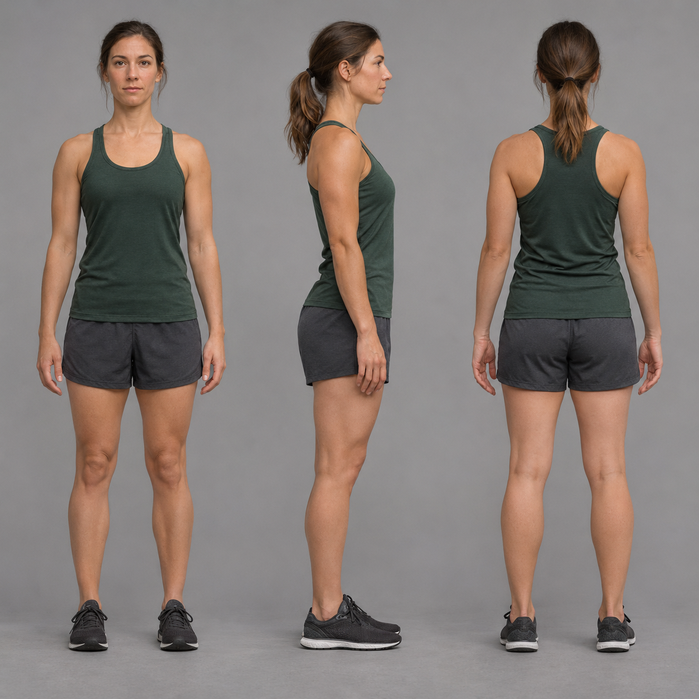

Kai · 凯首席演示运动员
专长：自重力量、体操类、杠铃与爆发力动作。性格：沉稳自律、动作教科书式严谨。带标版全部插图与无标版力量/器械镜头主角。

带标版 · ALIVO-editorial · 可自由使用

无标开源版 · CC-BY-4.0 · Paul Leung · 使用须署名
Liv · 莉芙灵活性与柔韧担当
专长：拉伸、瑜伽、动态热身、瑜伽球与放松类动作。性格：轻快亲和、节奏感强。第 13 轮起无标版柔韧/灵活性镜头主力。

带标版 · ALIVO-editorial · 可自由使用

无标开源版 · CC-BY-4.0 · Paul Leung · 使用须署名
ALIVO 演示运动员为本项目数字资产：深灰绿背心、炭灰短裤、深色运动鞋、中性灰摄影棚背景，全部自研动作插图沿用同一角色基准。角色外观以服装与风格规范定义，名册见 character/roster.md。